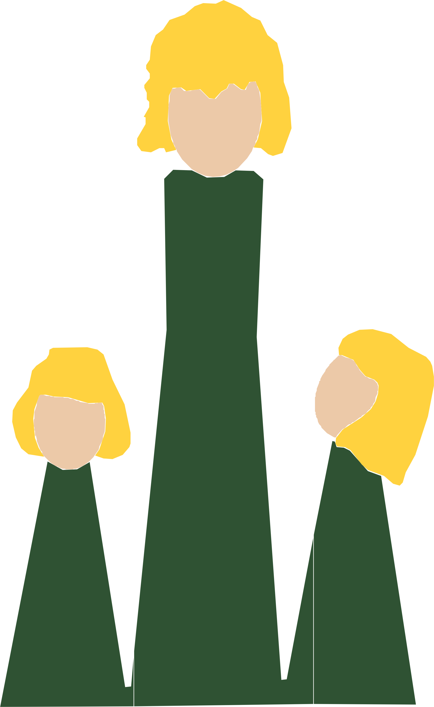

Personnages

Caractère et exemples tirés des histoires, mis à jour au fil des nouveaux textes. Clique sur un personnage pour voir sa fiche complète.
Le soir venu, tout peut arriver, à ouvrir avec précaution.

Caractère et exemples tirés des histoires, mis à jour au fil des nouveaux textes. Clique sur un personnage pour voir sa fiche complète.
Idées, concepts et logiques narratives en vrac — le matériau brut avant qu'il ne devienne une histoire.
Grilles de lecture réutilisables pour construire ou vérifier une histoire — points principaux et points d'attention, comme pour les fiches personnage.
Estimation, pas une mesure exacte — à ajuster si le ressenti ne correspond pas.